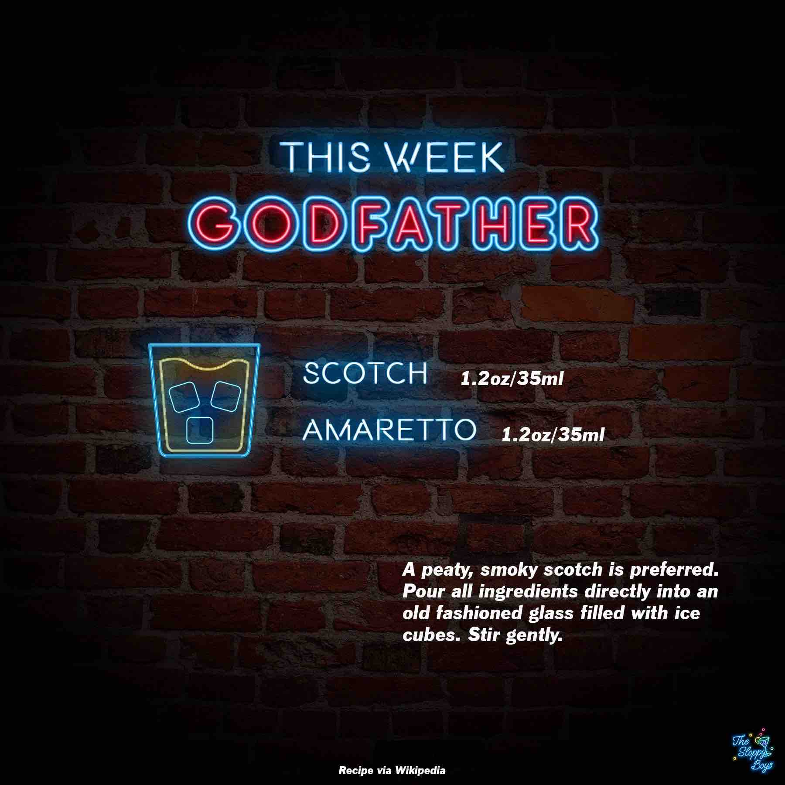

Sloppy Drinks
Podcast
About

Godfather
Ingredients
Scotch (1.2oz/35ml)
Amaretto (1.2oz/35ml)
Steps
A peaty, smoky scotch is preferred.
Pour all ingredients directly into an old fashioned glass filled with ice cubes.
Stir gently.
Notes
Episode 118 - Godfather (January 20, 2023)
Wikipedia Godfather Recipe
Artwork by The Sloppy Boys